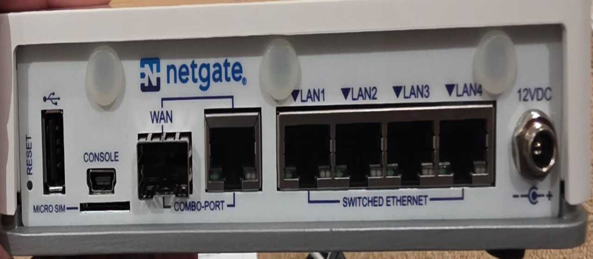
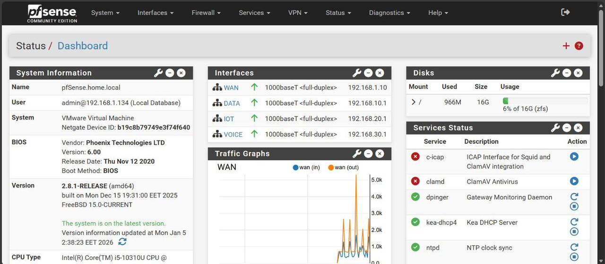
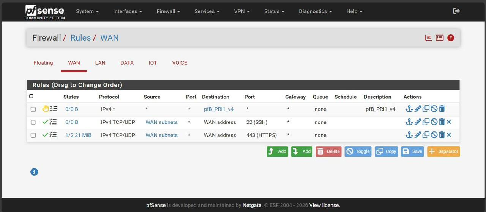
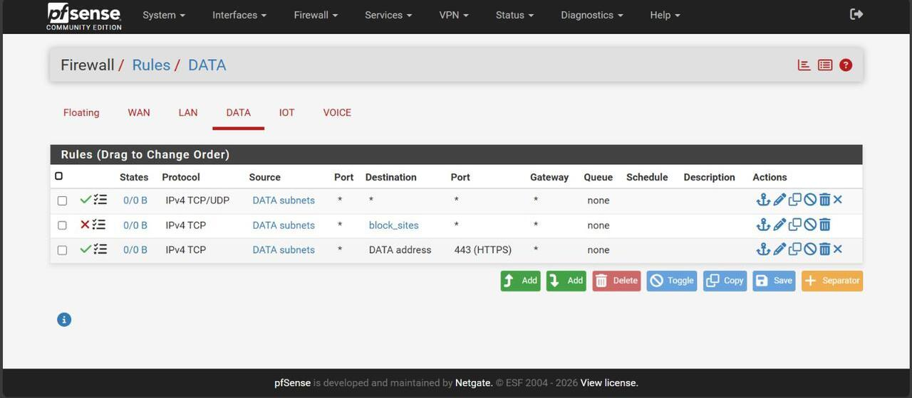
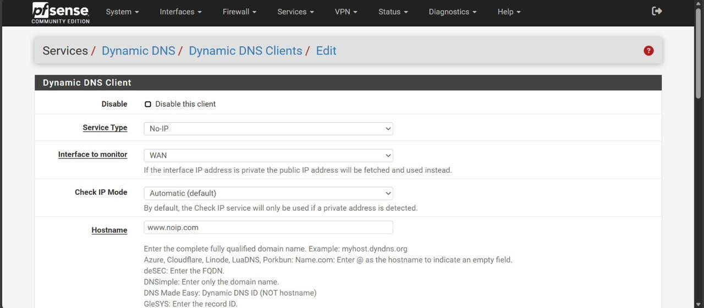
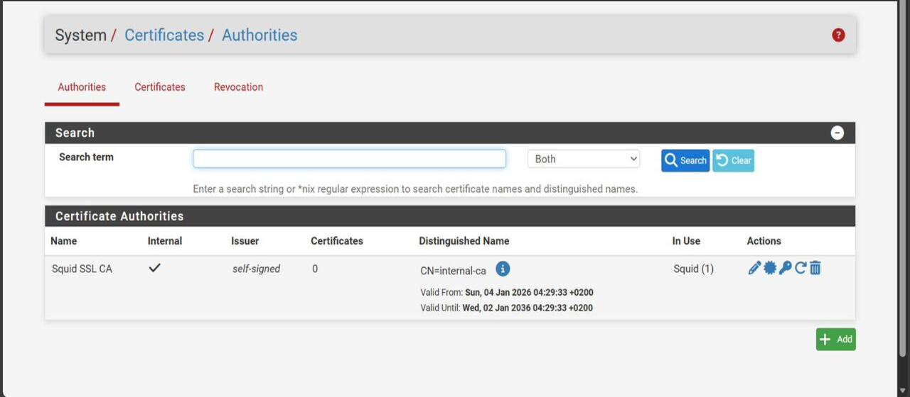
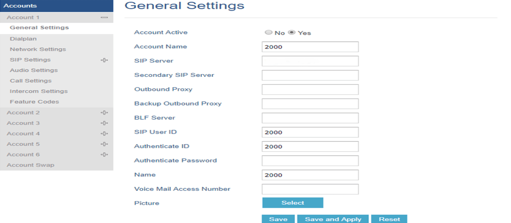
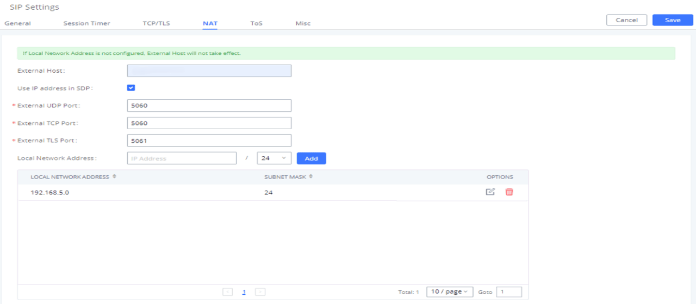

Project Overview
This project demonstrates how to configure a Grandstream UCM6302 IP PBX with pfSense firewall and No-IP Dynamic DNS, enabling clients to use the Grandstream Wave app securely from anywhere in the world.
Key Features
- Dynamic DNS setup with No-IP.
- pfSense NAT rules for SIP and RTP traffic.
- UCM6302 NAT configuration for external host.
- Grandstream Wave app remote registration.
- Security considerations for SIP and RTP traffic.
pfsense Device


pfSense Firewall Rules




UCM6302 SIP Settings


Grandstream Wave App
Implementation Schedule
- Step 1: Configure No-IP Dynamic DNS client on pfSense.
- Step 2: Create NAT rules for SIP (5060) and RTP (10000–20000).
- Step 3: Adjust UCM6302 SIP NAT settings with external host.
- Step 4: Test Grandstream Wave app registration externally.
- Step 5: Apply firewall rules to block unwanted traffic (e.g., YouTube).
- Step 6: Document and verify with client.
Firewall Content Filtering (Block YouTube)
To enhance productivity and security, pfSense aliases were used to block access to YouTube and other non‑business sites:
- Alias created: block_sites → www.youtube.com, www.tiktok.com.
- Firewall rule applied on DATA interface to block TCP traffic to these hosts.
- Ensures staff bandwidth is reserved for VoIP and business applications.